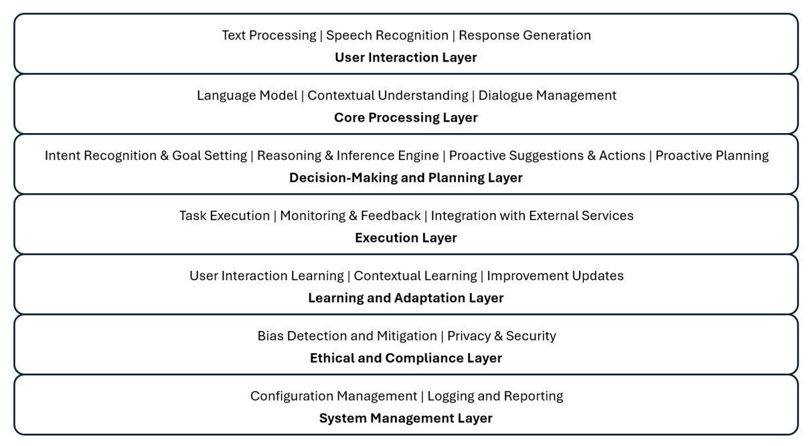

Reference architecture of Agentic AI system
The
reference architecture of agentic LLM-based AI systems combines various
components to enable autonomy, intentionality, proactivity, decision-making,
self-regulation, and continuous learning. Here is a high-level overview of such
architecture:

1. User
Interaction Layer
- Natural
Language Processing (NLP) Interface:
- Speech
Recognition:
Converts spoken language into text.
- Text
Processing:
Handles textual input from users.
- Natural
Language Generation (NLG):
- Response
Generation:
Produces human-like text or speech output.
2. Core
Processing Layer
- Language
Model:
- Contextual
Understanding:
Utilizes pre-trained language models (e.g., GPT-4) to understand context,
intent, and user queries.
- Knowledge
Base Integration: Enhances LLM with domain-specific knowledge.
- Dialogue
Management:
- Context
Management:
Maintains conversation context across multiple interactions.
- Dialogue
Flow Control:
Manages the progression of conversations, ensuring logical flow and
coherence.
3. Decision-Making
and Planning Layer
- Intent
Recognition and Goal Setting:
- Intent
Detection:
Identifies user intent from input.
- Goal
Management:
Sets and tracks goals based on user input and context.
- Reasoning
and Inference Engine:
- Decision
Algorithms:
Applies rule-based or machine learning algorithms to make decisions.
- Inference
Mechanisms:
Draws logical conclusions from available data.
- Proactive
Planning Module:
- Scenario
Analysis:
Predicts future states and plans actions accordingly.
- Proactive
Suggestions:
Offers proactive recommendations and actions.
4. Execution
Layer
- Task
Execution:
- Action
Management:
Manages and executes actions to fulfill user requests.
- Integration
with External Services: Interfaces with APIs and external systems to perform
tasks (e.g., setting reminders, fetching information).
- Monitoring
and Feedback:
- Performance
Monitoring:
Tracks the effectiveness and efficiency of task execution.
- User
Feedback Collection: Gathers user feedback for continuous improvement.
5. Learning and Adaptation Layer
- Continuous
Learning Module:
- User
Interaction Learning: Learns from user interactions to improve responses and actions.
- Contextual
Learning:
Adapts to new contexts and information dynamically.
- Feedback
Loop:
- Error
Analysis:
Identifies and learns from errors in interactions.
- Improvement
Updates:
Updates models and algorithms based on feedback and new data.
6. Ethical
and Compliance Layer
- Bias
Detection and Mitigation:
- Fairness
Algorithms:
Ensures decisions and actions are fair and unbiased.
- Regular
Audits:
Conducts regular audits to detect and mitigate biases.
- Privacy
and Security:
- Data
Protection Mechanisms: Ensures user data privacy and compliance with regulations (e.g.,
GDPR, CCPA).
- Secure
Communication:
Secures data transmission and storage.
7. System
Management Layer
- Configuration
Management:
- System
Configuration:
Manages configuration settings and preferences.
- Logging
and Reporting:
- Activity
Logs:
Maintains logs of user interactions and system actions.
- Reporting
Tools:
Generates reports on system performance and user interactions.
Conclusion
The
reference architecture of agentic LLM-based AI systems integrates multiple
layers and components to create a comprehensive, autonomous, and adaptive
system. This architecture supports complex interactions, autonomous
decision-making, proactive behavior, and continuous learning, all while
ensuring ethical standards and user data protection.